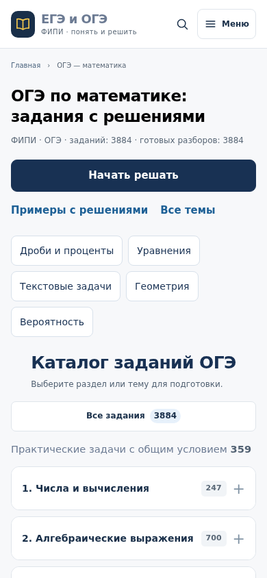
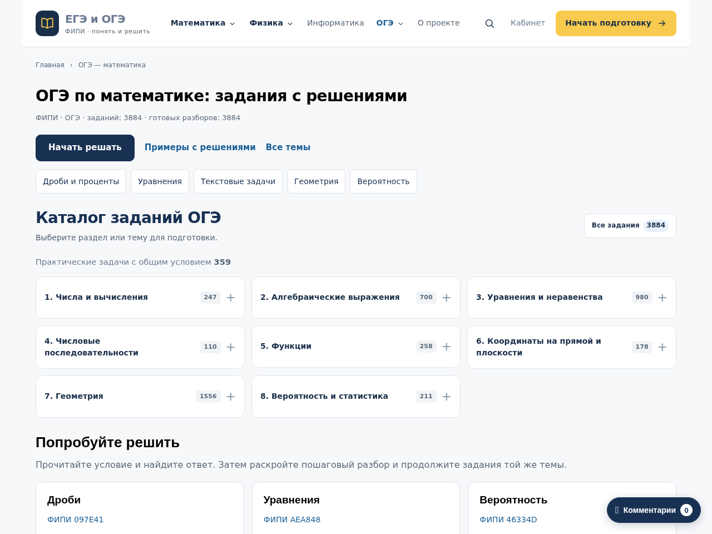

Опубликовано 24.11.2026 в 03:31:37 МСК. Открыть страницу.
Используются прежние цели solution_open и next_task с placement=oge_hub_example, section=oge и task_id. solution_open возникает при раскрытии решения, повторное намеренное открытие — отдельное действие. Само присутствие HTML решения и закрытые примеры событий не создают. Стандартный наблюдатель страниц задач не учитывает эти примеры повторно. Продолжение использует прежний обработчик ссылок с резервным переходом через 250 мс при недоступном callback счётчика.
Сопоставлены 20 новых LOW_QUALITY и 20 адресов из доступного списка поиска: по десять пар математики и физики ЕГЭ, совпадение по широкой учебной теме. У всех 40 есть исходное условие, опубликованный ответ и развёрнутое решение. Это структурное сопоставление, а не независимая математическая сверка.
У 2AF210 и 534193 совпали текст условия, ответ и текст решения; SVG различаются побайтово, визуальная эквивалентность не устанавливалась. Одной такой пары недостаточно для утверждения о причине LOW_QUALITY или выбора другого canonical. Условия, решения, правила индексации задач и очередь переобхода не менялись. Все 20 пар.
24 ноября — переходный день, первый полный день после изменения — 25 ноября. Первое полное семидневное окно: 25.11–01.12. В Метрике разделять точный корень /oge и темы/пагинацию, поиск и прочие источники, устройства и placement целей. Отслеживать поисковые входы, долю визитов с раскрытием решения и продолжением; отдельно мобильные отказы. Новые просмотры примеров изменяют состав событий на корне: их нельзя принимать за автоматически доказанное улучшение прежних страниц задач.
Позиции и показы Вебмастера на момент исходного анализа доступны по 20.11. Влияние правки на поиск и LOW_QUALITY ещё не измерено. Проверки браузера выполнены Chrome Linux с эмуляцией телефона, не аппаратным iPhone/Safari. Автоматическое будущее наблюдение не настраивалось.


Все три раскрытых примера на мобильном экране
Сводка проверок · Публичные сценарии · Публичные HTTP-сверки · Публикация